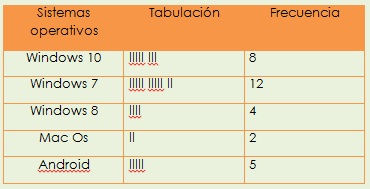

1 Gestión de procesos: Una de las partes más importantes de un sistema operativo es la gestión de los procesos. Los procesos son los recursos que necesita un programa para ejecutarse. Esto implica el uso de la memoria, del tiempo del CPU (unidad central de procesamiento) y los archivos a los que necesita acceso la aplicación para funcionar bien.
2 Gestión de la memoria principal: Otro de los componentes importantes del sistema operativo es la gestión de la memoria principal. La memoria consiste en un almacén de datos que es compartido por la CPU y las aplicaciones y que pierde su capacidad si surge algún fallo. 3 Gestión del almacenamiento secundario: La memoria es algo muy volátil y ante cualquier fallo puede perder la información contenida en ella. Por esto, es necesario tener un segundo módulo de almacenamiento que pueda almacenar los datos a largo plazo. Al igual que con la memoria principal, el sistema operativo se encarga de gestionar el espacio libre y asigna el orden de guardado. También se asegura de que todo quede perfectamente guardado, así como de cuánto espacio queda libre y dónde. 4 Gestión del sistema de entrada y salida: El sistema operativo es el encargado de gestionar los puertos de entrada y salida del ordenador, como pueden ser unos auriculares, una impresora, un monitor, etc. Antiguamente, cuando querías instalar un nuevo puerto externo, era importante tener un disco de instalación que contuviera los drivers para que el ordenador los aceptase. 5 Registro del sistema de archivos: Los archivos son formatos creados por sus dueños que se convierten en tablas, y el sistema operativo es el encargado de registrarlas y guardarlas. El sistema operativo se encarga de construir, eliminar y archivar los archivos creados, así como de ofrecer las herramientas necesarias para poder acceder a los archivos en cualquier momento. Establece la comunicación entre los archivos y las unidades de almacenamiento, y por último, se puede configurar de manera que haga copias de seguridad de todos los archivos, para que en caso de accidente, no se pierdan todos. 6 Seguridad: El sistema operativo es el encargado de la seguridad de la máquina. Una de las actividades más importantes es el acceso de usuarios o programas a donde no deben. Existen muchos virus que pueden afectar a nuestro sistema, y el sistema operativo se encarga de que esto no suceda. Se puede configurar el sistema operativo de manera que se realicen controles periódicos y se establezcan los controles de seguridad que tiene que realizar. 7 Comunicación entre elementos y aplicaciones: A través de las interfaces de red, el sistema operativo mantiene la comunicación entre los distintos componentes de la máquina y todas las aplicaciones que estén en contacto con ellos. Envía y recibe información. 8 Informar del estado del sistema: Existen una serie de aplicaciones que vienen instaladas por defecto junto al sistema operativo, pero que no son un sistema como tal. Estas ofrecen un entorno y unas características básicas para el desarrollo y la ejecución de los programas que están instalados en nuestra máquina. Informa del estado del sistema, si se necesita realizar alguna acción o aprobar que se realice alguna acción, como pueden ser las actualizaciones automáticas. 9 Gestión de recursos: Administra todas las partes principales de la máquina a través de su gestor de recursos. Su función como administrador conlleva la seguridad y comunicación de la unidad central de procesamiento o CPU, los dispositivos externos que son conectados al ordenador. Al igual que la memoria interna y la memoria secundaria, donde a veces tiene que hacer limpieza y cambiar partes almacenadas de una a otra. En general, administra todos los recursos del sistema y todos los recursos que entran en contacto con el mismo 10 Administración de usuarios: El sistema operativo también es el encargado de gestionar los perfiles almacenados en el ordenador dependiendo de quien tenga creado un perfil en él. La administración de usuarios puede ser monousuario o multiusuario. Esto no significa que el sistema operativo permita que sólo se cree un perfil de usuario para utilizar en un ordenador. Que sea un perfil de monousuario implica que sólo las ejecuciones de ese usuario estén activas y solo las de él. En el otro, en el multiusuario, permite que las tareas de más de un usuario estén activas al mismo tiempo.
FRECUENCIA PARA DATOS NO AGRUPADOS Es el conjunto de datos obtenidos en la recopilación y una vez que se han recopilado los datos, el siguiente paso es organizarlos.
TABLA DE FRECUENCIAS Lo datos estadísticos obtenidos durante la recopilación se organiza en una tabla llamada “Tabla de frecuencias o distribución de frecuencias simple”.
FRECUENCIA A un grupo de 31 alumnos se les hizo una encuesta preguntándoles cual es el sistema operativo que utilizan con más frecuencia y estos fueron los resultados.
